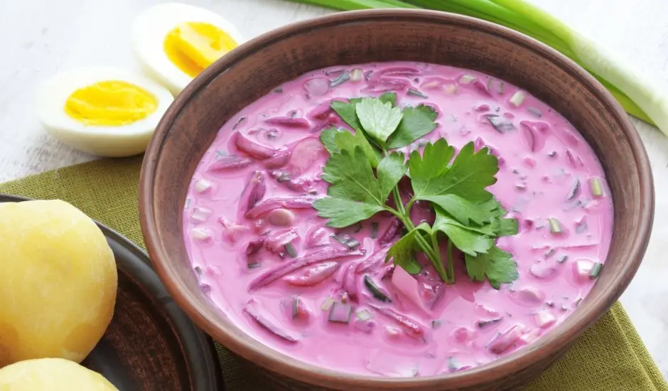

Mūsu forums sniedz atbildes uz jautājumiem par Latviju, tostarp par populāro vasaras ēdienu — auksto zupu, kā arī citiem kultūras aspektiem.
Latvija atrodas Eiropas ziemeļaustrumos, Baltijas jūras austrumu krastā. Tai ir kopīga robeža ar Igauniju, Lietuvu, Krieviju un Baltkrieviju. Ģeogrāfiski Latvija ir stratēģiski izdevīgā vietā, kas savieno Rietumeiropu ar Austrumeiropu. Tās novietojums padara to par nozīmīgu tranzīta un loģistikas centru.
Latvijas oficiālā valoda ir latviešu valoda. Tā ir sena baltu valoda ar bagātu vēsturi un unikālu gramatiku. Latviešu valoda ir viena no Eiropas Savienības oficiālajām valodām, un to ikdienā lieto lielākā daļa iedzīvotāju. Valsts iestādēs, skolās un medijos dominē latviešu valoda, lai gan pilsētās var dzirdēt arī krievu, angļu un citas valodas.
Latvijas galvaspilsēta ir Rīga. Tā ir lielākā pilsēta Baltijas valstīs un svarīgs ekonomikas, kultūras un izglītības centrs. Rīgā dzīvo vairāk nekā 600 000 iedzīvotāju. Pilsēta ir slavena ar savu jūgendstila arhitektūru, vecpilsētu un aktīvo kultūras dzīvi. Rīgas centrs ir iekļauts UNESCO Pasaules mantojuma sarakstā.
Latvijā ir mēreni kontinentāls klimats ar izteiktām četrām sezonām. Pavasarī un rudenī laika apstākļi ir mainīgi, vasarās ir siltas un patīkamas dienas, savukārt ziemās var būt sals un sniegs. Gada vidējā temperatūra ir ap +6°C. Nokrišņi ir samērā bieži visu gadu, īpaši piekrastes rajonos.
Latvija ir vairāku nozīmīgu starptautisku organizāciju locekle, tostarp Eiropas Savienība (ES), NATO, Apvienoto Nāciju Organizācija (ANO) un Pasaules Tirdzniecības organizācija (PTO). Šī dalība nodrošina Latvijai iespējas iesaistīties starptautiskajā politikā, drošībā un ekonomikā.
Latvijas virtuve ir ļoti bagāta. Populārākie tradicionālie ēdieni ir rupjmaize, skābu kāpostu zupa, pelēkie zirņi ar speķi, aukstā zupa vasarā un medījumu gaļa ziemā. Ēdienos bieži tiek izmantoti vietējie dārzeņi, zivis no Baltijas jūras un piena produkti. Aukstā zupa var saturēt pupiņas, desu, tomātus un, protams, bietes. Ir pieejama arī vegāniska aukstā zupa, ko taisa, izmantojot ūdeni.
Aukstā zupa ir tradicionāls Latvijas ēdiens, ko bieži baudām vasarā. Tā sastāv no bietēm, kefīra vai ūdens, gurķiem, sīpoliem un dažkārt arī desas vai olām. Šī zupa ir populāra pateicoties savai atsvaidzinošajai garšai karstās dienās.
